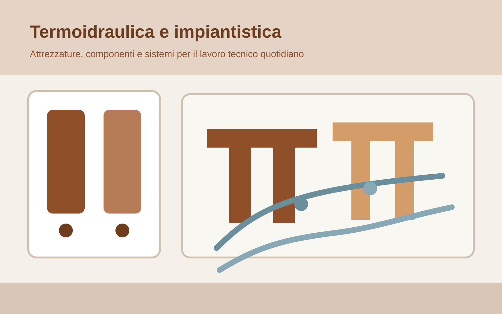

Riscaldamento
Caldaie, pompe di calore, componenti di impianto e soluzioni per interventi di sostituzione o rinnovo.
Termoidraulica
Questa pagina rende più leggibile l’offerta termoidraulica di Termoidraulica Lauri: categorie chiare, marchi forti, impiantistica e un approccio pratico pensato sia per il privato sia per il professionista.
Nel nuovo sito la termoidraulica viene organizzata per bisogni reali: riscaldamento, impiantistica, accessori, ricambi, attrezzature e materiali di consumo. Il tono resta tecnico ma comprensibile, con un linguaggio adatto anche a chi cerca una soluzione rapida e non vuole perdersi in un catalogo troppo generico.
Categorie
Caldaie, pompe di calore, componenti di impianto e soluzioni per interventi di sostituzione o rinnovo.
Sistemi di scarico, adduzione, raccordi e componentistica tecnica per lavori affidabili e ordinati.
Attrezzature e strumenti per installatori e professionisti che cercano qualità, rapidità e continuità operativa.
Immagini e marchi
Ho sostituito i riquadri vuoti con immagini generate direttamente nel progetto, così ora questa parte si vede davvero e possiamo correggerla su una base concreta.

Attrezzature professionali · REMSREMS entra come marchio di riferimento per attrezzature e supporto al professionista. In questa sezione possiamo spingere filettatrici, pressatrici, utensili per installazione e soluzioni da banco o da cantiere con un taglio più concreto e orientato all’uso reale.
Questa fascia va raccontata come area tecnica forte del sito: scarichi, cassette, sistemi impiantistici, raccordi, componenti per adduzione e soluzioni affidabili per lavori puliti e duraturi. Valsir e Teco danno subito più solidità alla sezione impiantistica.
Focus marchi
Da posizionare come marchio forte per chi cerca attrezzature affidabili e professionali. Il messaggio giusto è: qualità operativa, efficienza sul lavoro e attrezzatura adatta a chi installa davvero.
Da posizionare come riferimento impiantistico: sistemi di scarico, adduzione, accessori e componenti per il lavoro tecnico quotidiano. Sono marchi utili anche per rendere la sezione più autorevole agli occhi del professionista.
Qui possiamo sostituire facilmente i testi con i modelli REMS, le linee Valsir o i prodotti Teco che vuoi spingere di più. Quando mi indicherai le famiglie giuste, aggiornerò questa pagina in modo ancora più preciso.